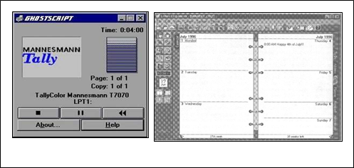

Interfaz de Usuario
. Conceptos Generales
La Interfaz de Usuario, en adelante IU, de un programa es un conjunto de elementos hardware y software de una computadora que presentan información al usuario y le permiten interactuar con la información y con el computadora. También se puede considerar parte de la IU la documentación (manuales, ayuda, referencia, tutoriales) que acompaña al hardware y al software.
Si la IU está bien diseñada, el usuario encontrará la respuesta que espera a su acción. Si no es así
puede ser frustrante su operación, ya que el usuario habitualmente tiende a culparse a sí mismo por no saber usar el objeto.
Los programas son usados por usuarios con distintos niveles de conocimientos, desde principiantes hasta expertos. Es por ello que no existe una interfaz válida para todos los usuarios y todas las tareas. Debe permitirse libertad al usuario para que elija el modo de interacción que más se adecúe a sus objetivos en cada momento. La mayoría de los programas y sistemas operativos ofrecen varias formas de interacción al usuario.
Modelos a considerarse:
Existen tres puntos de vista distintos en una IU: el del usuario, el del programador y el del diseñador (analogía de la construcción de una casa). Cada uno tiene un modelo mental propio de la interfaz, que contiene los conceptos y expectativas acerca de la misma, desarrollados a través de su experiencia.
El modelo permite explicar o predecir comportamientos del sistema y tomar las decisiones adecuadas para modificar el mismo. Los modelos subyacen en la interacción con las computadoras, de ahí su importancia.
Modelo del usuario: El usuario tiene su visión personal del sistema, y espera que éste se comporte de una cierta forma. Se puede conocer el modelo del usuario estudiándolo, ya sea realizando tests de usabilidad, entrevistas, o a través de una realimentación. Una interfaz debe facilitar el proceso de crear un modelo mental efectivo.
Para ello son de gran utilidad las metáforas, que asocian un dominio nuevo a uno ya conocido por el usuario. Un ejemplo típico es la metáfora del escritorio, común a la mayoría de las interfaces gráficas actuales.
Modelo del diseñador: El diseñador mezcla las necesidades, ideas, deseos del usuario y los materiales de que dispone el programador para diseñar un producto de software. Es un intermediario entre ambos.
El modelo del diseñador describe los objetos que utilizan el usuario, su presentación al mismo y las técnicas de interacción para su manipulación. Consta de tres partes: presentación, interacción y relaciones entre los objetos (Figura 1).
La presentación es lo que primero capta la atención del usuario, pero más tarde pasa a un segundo
plano, y adquiere más importancia la interacción con el producto para poder satisfacer sus expectativas. La presentación no es lo más relevante y un abuso en la misma (por ejemplo, en el color) puede ser contraproducente, distrayendo al usuario.
La segunda parte del modelo define las técnicas de interacción del usuario, a través de diversos dispositivos.
La tercera es la más importante, y es donde el diseñador determina la metáfora adecuada que encaja con el modelo mental del usuario. El modelo debe comenzar por esta parte e ir hacia arriba. Una vez definida la metáfora y los objetos del interfaz, los aspectos visuales saldrán de una manera lógica y fácil.
Estos modelos deben estar claros para los participantes en el desarrollo de un producto, de forma que se consiga una interfaz atractiva y a la vez efectiva para el trabajo con el programa.
Una interfaz no es simplemente una cara bonita; esto puede impresionar a primera vista pero decepcionar a la larga. Lo importante es que el programa se adapte bien al modelo del usuario, cosa que se puede comprobar utilizando el programa más allá de la primera impresión.
Modelo del programador: Es el más fácil de visualizar, al poderse especificar formalmente. Está constituido por los objetos que manipula el programador, distintos de los que trata el usuario (ejemplo: el programador llama base de datos a lo que el usuario podría llamar agenda). Estos objetos deben esconderse del usuario.
Los conocimientos del programador incluyen la plataforma de desarrollo, el sistema operativo, las herramientas de desarrollo y especificaciones. Sin embargo, esto no significa necesariamente que tenga la habilidad de proporcionar al usuario los modelos y metáforas más adecuadas. Muchos no consideran el modelo del usuario del programa, y sí sus propias expectativas acerca de cómo trabajar con la computadora.
Principios para el Diseño de Interfaces de Usuario
Existen principios relevantes para el diseño e implementación de IU, ya sea para las IU gráficas, como para la Web.
Anticipación
Las aplicaciones deberían intentar anticiparse a las necesidades del usuario y no esperar a que el usuario tenga que buscar la información, recopilarla o invocar las herramientas que va a utilizar.
Autonomía
La computadora, la IU y el entorno de trabajo deben estar a disposición del usuario. Se debe dar al usuario el ambiente flexible para que pueda aprender rápidamente a usar la aplicación. Sin embargo, está comprobado que el entorno de trabajo debe tener ciertas cotas, es decir, ser explorable pero no azaroso.
Percepción del Color
Aunque se utilicen convenciones de color en la IU, se deberían usar otros mecanismos secundarios para proveer la información a aquellos usuarios con problemas en la visualización de colores
Valores por Defecto
No se debe utilizar la palabra “Defecto” en una aplicación o servicio. Puede ser reemplazada por “Estándar” o “Definida por el Usuario”, “Restaurar Valores Iniciales” o algún otro término especifico que describa lo que está sucediendo. Los valores por defecto deberían ser opciones inteligentes y sensatas. Además, los mismos tienen que ser fáciles de modificar.
Consistencia
Para lograr una mayor consistencia en la IU se requiere profundizar en diferentes aspectos que están catalogados en niveles. Se realiza un ordenamiento de mayor a menor consistencia:
1. Interpretación del comportamiento del usuario: la IU debe comprender el significado que le atribuye un usuario a cada requerimiento. Ejemplo: mantener el significado de las los comandos abreviados (shortcut-keys) definidos por el usuario.
2. Estructuras invisibles: se requiere una definición clara de las mismas, ya que sino el usuario nunca podría llegar a descubrir su uso. Ejemplo: la ampliación de ventanas mediante la extensión de sus bordes.
3. Pequeñas estructuras visibles: se puede establecer un conjunto de objetos visibles capaces de
ser controlados por el usuario, que permitan ahorrar tiempo en la ejecución de tareas específicas. Ejemplo: ícono y/o botón para impresión.
4. Una sola aplicación o servicio: la IU permite visualizar a la aplicación o servicio utilizado como
un componente único. Ejemplo: La IU despliega un único menú, pudiendo además acceder al mismo mediante comandos abreviados.
5. Un conjunto de aplicaciones o servicios: la IU visualiza a la aplicación o servicio utilizado como un conjunto de componentes. Ejemplo: La IU se presenta como un conjunto de barras de comandos desplegadas en diferentes lugares de la pantalla, pudiendo ser desactivadas en forma independiente.
6. Consistencia del ambiente: la IU se mantiene en concordancia con el ambiente de trabajo. Ejemplo: La IU utiliza objetos de control como menús, botones de comandos de manera análoga a otras IU que se usen en el ambiente de trabajo.
7.Consistencia de la plataforma: La IU es concordante con la plataforma. Ejemplo: La IU tiene un
esquema basado en ventanas, el cual es acorde al manejo del sistema operativo Windows.
Eficiencia del Usuario
Se debe considerar la productividad del usuario antes que la productividad de la máquina. Si el usuario debe esperar la respuesta del sistema por un período prolongado, estas pérdidas de tiempo se pueden convertir en pérdidas económicas para la organización. Los mensajes de ayuda deben ser sencillos y proveer respuestas a los problemas. Los menús y etiquetas de botones deberían tener las palabras claves del proceso.
Ley de Fitt
El tiempo para alcanzar un objetivo es una función de la distancia y tamaño del objetivo. Es por ello, que es conveniente usar objetos grandes para las funciones importantes.
Interfaces Explorables
Siempre que sea posible se debe permitir que el usuario pueda salir ágilmente de la IU, dejando una marca del estado de avance de su trabajo, para que pueda continuarlo en otra oportunidad.
Para aquellos usuarios que sean noveles en el uso de la aplicación, se deberá proveer de guías para realizar tareas que no sean habituales.
Es conveniente que el usuario pueda incorporar elementos visuales estables que permitan, no
solamente un desplazamiento rápido a ciertos puntos del trabajo que esté realizando, sino también un sentido de “casa” o punto de partida.
La IU debe poder realizar la inversa de cualquier acción que pueda llegar a ser de riesgo, de esta forma se apoya al usuario a explorar el sistema sin temores.
Siempre se debe contar con un comando “Deshacer”. Este suprimirá la necesidad de tener que contar con diálogos de confirmación para cada acción que realice en sistema.
El usuario debe sentirse seguro de poder salir del sistema cuando lo desee. Es por ello que la IU debe tener un objeto fácil de accionar con el cual poder finalizar la aplicación.
Objetos de Interfaz Humana
Los objetos de interfaz humana no son necesariamente los objetos que se encuentran en los sistemas orientados a objetos. Estos pueden ser vistos, escuchados, tocados o percibidos de alguna forma. Además, estos objetos deberían ser entendibles, consistentes y estables.
Uso de Metáforas
Las buenas metáforas crean figuras mentales fáciles de recordar. La IU puede contener objetos asociados al modelo conceptual en forma visual, con sonido u otra característica perceptible por el usuario que ayude a simplificar el uso del sistema.
